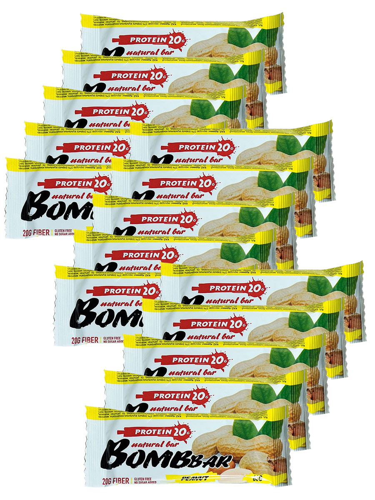
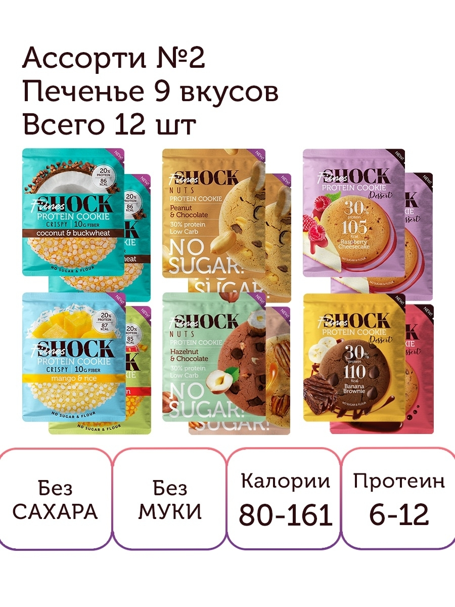
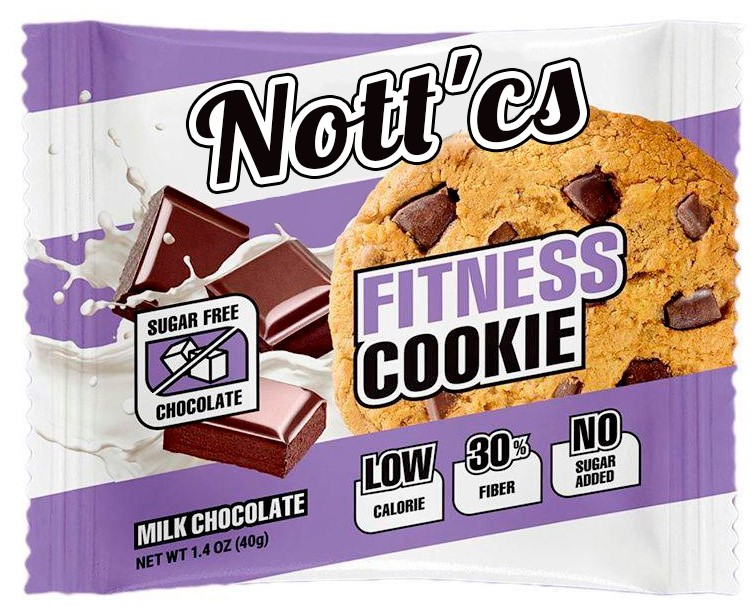
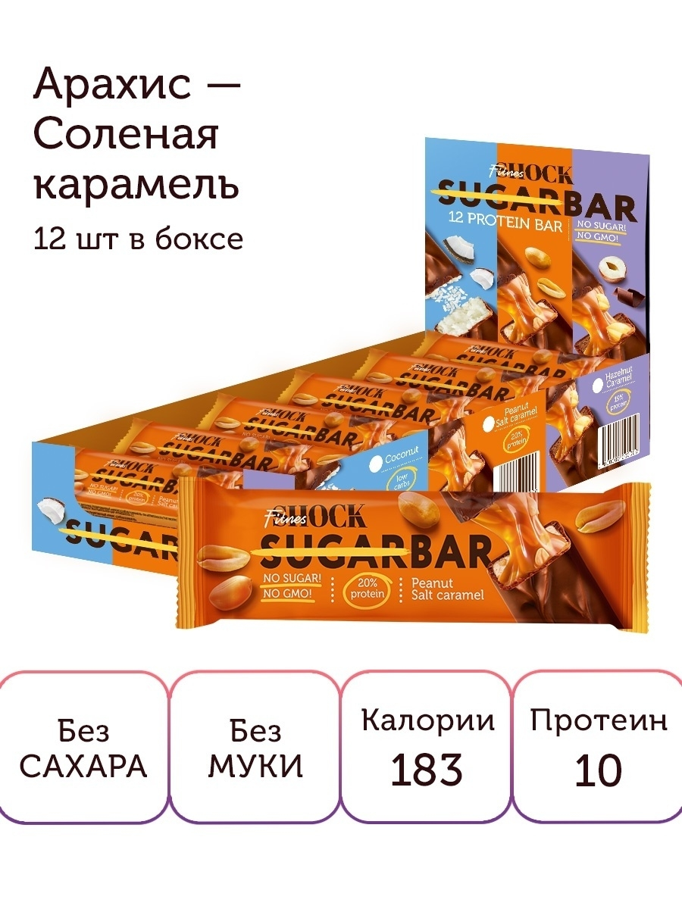

NottBar / Протеиновый батончик Nottbar в шоколаде без сахара 30 шт
2448₽
В шоубоксе содержатся 30 протеиновых батончиков в шоколаде без сахара, 40 грамм 1 штука: по 6 штук каждого вкуса, фисташка, кокос, банан, фундук, малина. Состав и КБЖУ продукта смотрите на странице с конкретным вкусом.Один батончик 40 грамм - 142 ккал.Протеиновые батончики в шоколаде помогают заменить любимые сахаросодежащие сладости. Батончик в шоколаде Ноттбар менее калорийный по сравнению с обычными батончиками из магазина. Сокращай калорийность перекусов вместе с Ноттбар и худей эффективнее.С батончиками удобно добирать суточную норму белка, а, значит, сохранять здоровье кожи, волос и ногтей. В составе нет белого сахара, натуральные подсластители, без глютена, пониженный уровень углеводов и жиров, по 15г белка в батончике, натуральный молочный шоколад без сахара, нежная фруктовая начинка с орехами.
Learn more

NottShock / Набор Ассорти Печенье 9 вкусов - 12 шт
914₽
Натуральная сладость без сахара и пшеничной муки. 12 высокобелковых низкокалорийных печенек в одном наборе - коктейль разнообразных вкусов! Здесь есть фундук, арахис, ягоды и фрукты, хрустящие криспи, банан, карамель и кокосовая стружка, а также полезный шоколад. Сочетание ингредиентов тщательно подобрано нутрициологом. А самый главный компонент - сывороточный протеин. Ведь белок так необходим нашему организму.
Learn more

Nott'cs / Набор печенья с разными вкусами
1900₽
Сбалансированный полезный состав - снижает вес и тягу к вредным сладостям. Ассорти Nott’cs - это 4 ярких экзотических вкуса: карамболь(х3), тамарилло(х3), личи(х3) и кумкват(х3). А так же, 3 обычных и всех знакомых каждому из нас вкусов, такие как: клубника(х4), банан(х4) и яблоко(х4). В наборе 12 печенек в индивидуальной упаковке. Не содержат сахара, муки и ГМО. Подходит не только как спортивное питание, но и как диетический низкокалорийный перекус. Высокое содержание белка, пищевых волокон, натуральных фруктов и ягод - легко бороться с чувством голода и желанием съесть что-то вредное. Хватит мечтать - пора действовать вместе с печеньем Nott’cs!
Learn more

FitnesNott / Протеиновый батончик без сахара "Арахис-сол карамель"
1007₽
Начните свой день с полезного протеинового батончика арахис-соленая карамель от FitnesNott. Сладость, от которой не толстеют! Без сахара, муки и химозных добавок. Только натуральный правильный состав от фитнес-тренера. Учитывает потребность организма в белках, клетчатке и разнообразном питании. Смесь сывороточного протеина и молочного белка плюс растительный белок из арахиса - то, что нужно, если ты на ПП. Батончик наполняет энергией, подходит как спортпит, а также не вредит тем, кто бережет форму, наращивает мышцы или снижает вес. Цельный арахис в сочетании с соленой карамелью подарят небывалое наслаждение вкусом. Считать калории не придется, все уже указано на упаковке.
Learn more